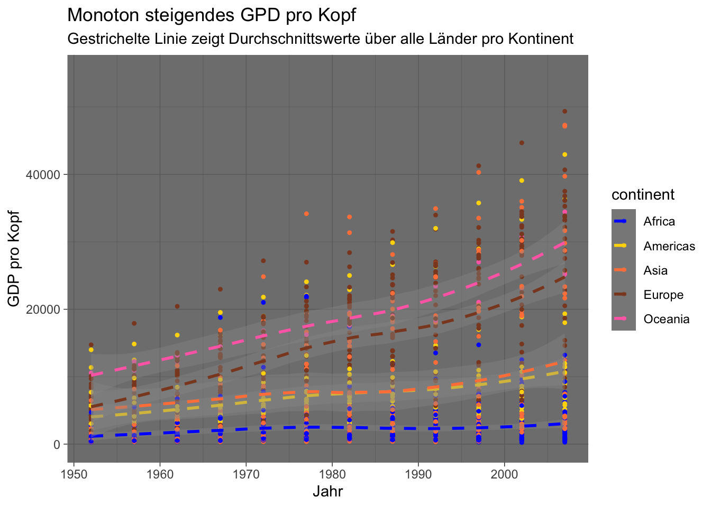
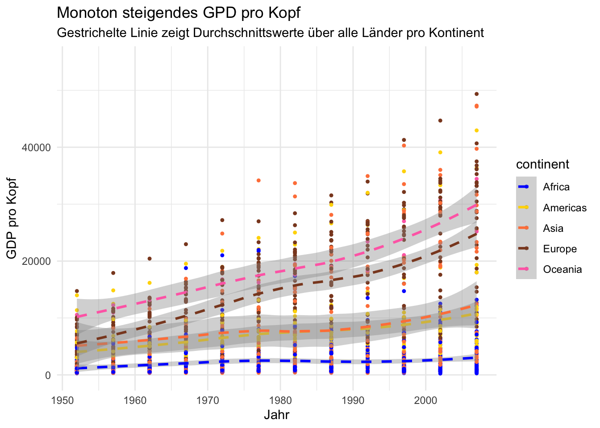
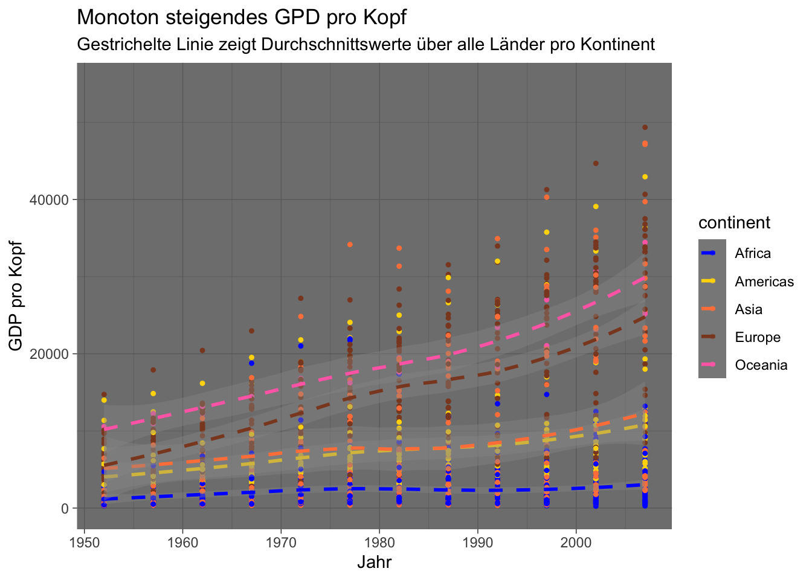
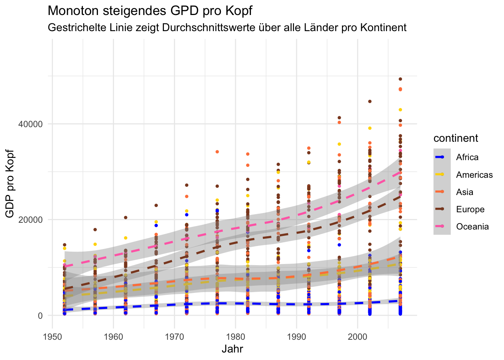

Kapitel 15 themes
Abschließend wollen wir noch über verschiedene themes sprechen. Über themes kann man das Aussehen der nicht datenbezogenen Elemente einer Grafik verändern, wie z.B.
- die Beschriftungen
- den Hintergrund
- die Legende
- ….
Eine Reihe von themes sind bereits vorhanden, wobei theme_gray() das Default theme ist. Siehe auch ?theme_gray().
p
#> `geom_smooth()` using method = 'loess' and formula 'y ~ x'
p + theme_bw()
#> `geom_smooth()` using method = 'loess' and formula 'y ~ x'
p + theme_dark()
#> `geom_smooth()` using method = 'loess' and formula 'y ~ x'
p + theme_minimal()
#> `geom_smooth()` using method = 'loess' and formula 'y ~ x' 

Wir möchten nun gerne folgende Änderungen an der Grafik vornehmen:
- die Größe der Achsenbeschriftung ändern
- die Gitterlinien ohne Beschriftung entfernen
- eine Überschrift hinzufügen
- die Legende in die Grafik verschieben
- die Hintergrundfarbe der Grafik und der Legende ändern
Die meisten dieser Änderungen können wir mit theme() durchführen.
p +
theme(
axis.text = element_text(size = 14),
legend.key = element_rect(fill = "navy"),
legend.background = element_rect(fill = "green"),
legend.position = "bottom",
panel.grid.major = element_line(colour = "grey40"),
panel.grid.minor = element_blank(),
panel.background = element_rect(fill = "navy")
)
#> `geom_smooth()` using method = 'loess' and formula 'y ~ x'Ob das nun alles schön aussieht, sei dahingestellt, aber es zeigt durchaus die vorhandenen Möglichkeiten.
Will man gewisse Einstellung öfter verwenden, so kann man diese auch in einem theme Objekt speichern und wiederverwenden.
mein_theme <- theme(
axis.text = element_text(size = 14),
legend.key = element_rect(fill = "hotpink3"),
panel.grid.major = element_line(colour = "grey40"),
panel.grid.minor = element_blank(),
panel.background = element_rect(fill = "navy")
)
class(mein_theme)
#> [1] "theme" "gg"
p + mein_theme
#> `geom_smooth()` using method = 'loess' and formula 'y ~ x'15.1 Buch zum Paket
Dieser Abschnitt konnte nur einen kleinen Einblick in die Möglichkeiten des ggplot2 Pakets geben. Eine ausführliche Beschreibung findet man im Buch zum Paket.